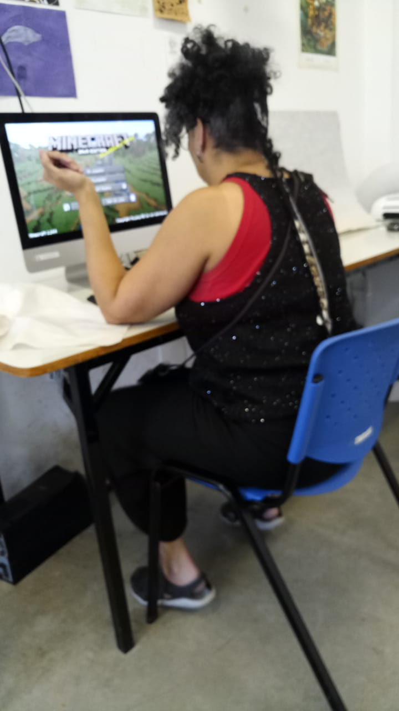

Job History
- University of Cincinnati: Adjunct Instructor, Jan 2023. Cincinnati, Ohio, United States. With Professor Evan Torner, Honors Course Decolonial Game Design.
- Federal de Juiz de Fora: Full Professor, October 2010 - Present (11 years). Juiz de Fora, MG, Brazil. Concept Art, Game Design and Instructional Design Professor
- UNESCO Chair of Reading PUC-Rio: Design Consultant & Researcher, December 2007 - October 2010 (2 years 11 months). Design consulting for Literacy and Reading projects in partnership with Catholic University of Rio de Janeiro.
- State University of Rio de Janeiro: Graphic Designer January 2002 - February 2004 (2 years 2 months) Art direction, web and graphic design for scientific magazine at the Art Institute.
- Akrito Publisher: Art Director, 1996 - 2000 (5 years). Branding, graphic design and concept art for the company and its role-playing games.
- Self-employed Illustrator and graphic designer: January 1991 - October 2010 (19 years 10 months). Concept Art, covers and internal art for publications, game design, art direction, visual research on Art History and Semiotics; art with an ethical and philosophical approach.
